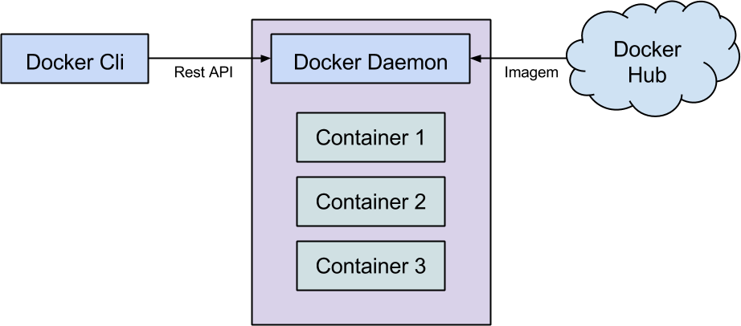

Docker para Desenvolvedores
23 de junho de 2015
Quem sou eu?
- • Consultor de Software
- • Desenvolvedor Java, Python e Javascript
- • Sysadmin
Mais em http://about.me/gustavohenrique
O que é Docker?
Uma API de alto nível que utiliza funcionalidades do Kernel do Linux para executar processos isolados em containers.
- • cgroups
- • namespaces

Boot2Docker no OSX e Win
- • VM Linux enxuta +/- 30 MB com boot em 5s
- • Utiliza o VirtualBox
Filosofia do Docker
construir, entregar, e executar qualquer app, em qualquer lugar.
- • construir: empacotar app em container
- • entregar: mover o container entre máquinas
- • executar: executa o container (sua app)
- • qualquer app: desde que rode no Linux
- • qualquer lugar: notebook, VM local, cloud...
Arquitetura do Docker

Demonstração
Indo além
- • Docker Compose: Junta os containers
- • Docker Swarm: Cluster para containers
- • Docker Machine: Deploy dos containers
Fim
Perguntas?
Twitter: @gustavohenriq